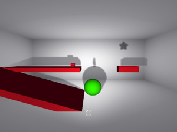
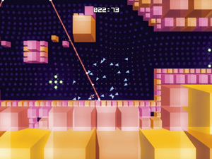
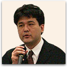

プレゼンテーション概要
| 開催日 | 2009年9月25日（金）17時～19時30分 |
|---|---|
| 会場 | 幕張メッセ・国際会議場2F「201」 |
プレゼンテーション作品
-
オープニング
-

Shadow Physics
Enemy Airship／アメリカ
-

Swarm Racer 3000
Joseph White (Lexaloffle Games)／日本
-
選考委員によるレビュー
開催概要
「センス・オブ・ワンダー ナイト 2009（SOWN 2009）」は、ゲーム開発者にスポットライトを当て、“見た瞬間、コンセプトを聞いた瞬間に、誰もがはっと、自分の世界が何か変わるような感覚”＝「センス・オブ・ワンダー」を引き起こすようなゲームのアイデアを発掘し、東京ゲームショウにてプレゼンテーションの機会を提供するもので、昨年初めて開催しました。
前回は、14の国と地域から67件の応募があり、選考の結果、海外4作品を含む計11作品のプレゼンテーションが行われました。同時開催した「インターナショナル・パーティー」と合わせて、22の国と地域から500名を超えるオーディエンスが参加。発表会場は、国際的な雰囲気のなか、盛況のうちに幕を閉じました。
2回目となるSOWN 2009も、より斬新なアイデアを広く募集します。世界中からゲーム業界関係者が集う東京ゲームショウで、あなたのアイデアをプレゼンテーションしてみませんか？ そして、そのプレゼンテーションに参加する他の仲間や、オーディエンスからも刺激を受け、新しい発見や人的ネットワークを得ていただきたいと考えています。
- 主催：社団法人コンピュータエンターテインメント協会／日経BP社
- 協力：国際ゲーム開発者協会日本（IGDA日本）
「センス・オブ・ワンダー ナイト」の目的
- 実験的であり、創造的であり、伝統的と呼ばれないゲームデザインやアイデアを含んだゲームを紹介すること
- 「センス・オブ・ワンダー」を感じられるゲームが作られることの重要性を紹介し、それにより、ゲーム産業の活性化を図ること
- 実験的なゲームを開発している人たちに、将来へのチャンスの場を提供すること
- ゲームデザインに新しい領域を作り出していくこと
発表を期待されているのは、プロトタイプのデモや、実験的な要素を持った発売済もしくは発売予定のゲーム、変なことを思いついた学生が開発したゲームといったものです。
プロやアマチュアといった区別もまったくありません。小さなベンチャー企業のゲームや、一人で開発しているような同人ゲームの投稿を歓迎します。
もし、「センス・オブ・ワンダー」を引き起こせるようなゲームを発表したいと思われるなら、以下のエントリー方法をご確認のうえ、ぜひ作品を応募してください。
「センス・オブ・ワンダー ナイト」が対象とするゲーム
- ユーザーインターフェースのイノベーション
自然言語処理、画像認識、ジェスチャーコントロールなどを応用した、新しい種類の体験を提供するゲーム - 自動生成によって生み出されるようなゲーム
ゲームプレイやユーザーがプレイする環境が、プレイヤーの選択によって劇的に変化するような世界を作り出すゲーム - インタラクティブなストーリーテリング
ゲーム内のストーリーの体験を新しい形で提供し、今までにない新しい物語へ展開するツールとして発展できるもの - 創発的な要素を持っているようなゲーム
物理システムをゲームプレイ要素の中にうまく組み込んでいたり、AI同士の組み合わせによって新しいゲームプレイを生み出していくようなもの - とにかくなんだか訳が分からないけれど、すごいもの
とにかく観た瞬間に「これはスゴイ…」と感銘を与えられるゲーム
「センス・オブ・ワンダー ナイト」が対象としないゲーム
- ゲームそのものに必ずしも関係ない要素が中心となっているもの
これまでになかったバックグラウンドの設定やシチュエーション、キャラクターデザイン、グラフィック、ストーリー、オーディオといったゲームを構成する一要素が驚きの中心である場合 - すでに存在しているジャンルやそれを単に混ぜたりしたことで
生み出された新ジャンル
ただし、それにもかかわらず、本当に新しいゲーム体験を作り出している場合は除きます - 特定の客層だけをターゲットにしていることが新しい理由である場合
女性のためだけのゲームや、老人向けといったもの。ただし、それでも多くの人が感銘を受けるようなものの場合は除きます - ゲームプレイに影響を与えない、純粋な技術的なイノベーション、
実験的なビジネスモデル、流通のメカニズム
それらを完全に排除するものではありませんが、ゲーム体験を直接かつ明快に変えることが明らかになっている必要があります
選考委員
 |
長 健太氏 ABA Games ABA Games名義でオープンソースのシューティングゲームを中心に個人製作するフリーゲーム開発者。 作品として、TUMIKI Fighters（北米Wii版Blast Worksとして商品化）など。 |
|---|---|
 |
Simon Carless氏 Independent Games Festival / Gamasutra 毎年Game Developers Conference（GDC）で実施されるアワード「インディペンデント・ゲーム・フェスティバル」の委員長を務める。GDCを主催し、北米で ゲーム開発者向けの情報を発信するThink Services社のグループ発行人でもある。 |
| 杉内 賢次氏 エンターブレイン ゲームコンストラクションツール「ツクールシリーズ」の企画、開発担当プロデューサー。現在、ツクールシリーズのワールドワイド展開に向けて鋭意準備中。 |
|
 |
高橋 慶太氏 バンダイナムコゲームス 1975年 福岡県門司港生まれ 1999年 ナムコ（現バンダイナムコゲームス）入社 2004年 PS2用ソフト「塊魂」発売 2009年 PS3用ソフト「のびのびBOY」発売 現在 iPhone版「のびのびBOY」開発中 |
 |
片山 崇氏 ベクター ソフトバンクグループでオンラインゲーム事業の立ち上げに携わりELEVEN-UP株式会社を設立。同社代表取締役社長を経て、現在はベクターにてオンラインゲームのプロデュースと、新規サービスの立ち上げを担当。 |
|  | 新 清士氏 国際ゲーム開発者協会日本 国際ゲーム開発者協会日本（IGDA日本）代表。 他に、ゲームジャーナリスト、立命館大学映像学部講師、コンピュータエンターテインメント協会（CESA）理事など。 |
謝辞
「センス・オブ・ワンダー ナイト」は、Game Developers Conferenceで、2002年に始まった「Experimental Gameplay Workshop」から、多くのインスピレーションを受けています。
このワークショップを成功させてきた多くの関係者ならびに友人達に、感謝の意を表します。
お問い合わせ先
SOWN事務局 : sown@nikkeibp.co.jp
（恐れ入りますが、メールのみでの対応とさせていただきます）